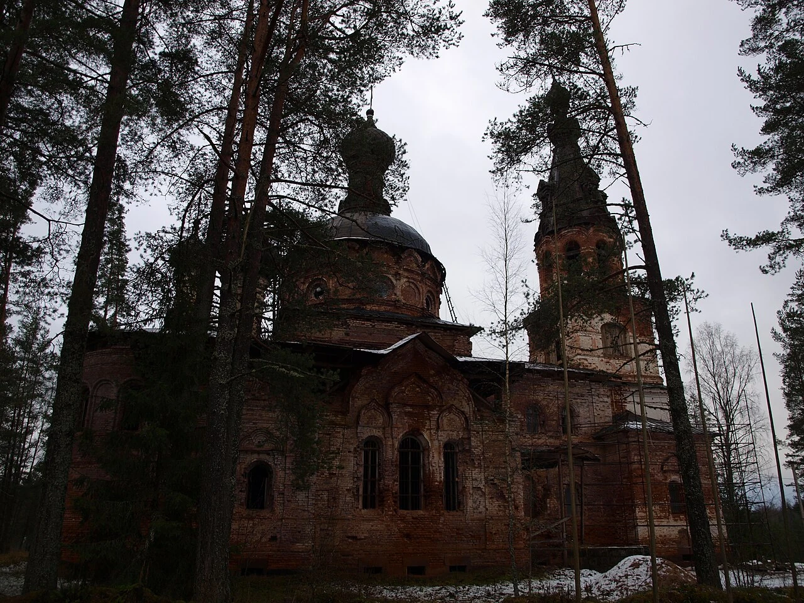

Церковь Покрова Пресвятой Богородицы ГеографияЛенинградская область Тип объектаОбъект культурного наследия Роль ТрикронаВосстановление объекта культурного наследия  Церковь в Хотнеже, архивный снимок 2014 года. Фото IRINA LOGUNOVA, Wikimedia Commons, CC BY-SA 4.0. Изображение преобразовано в WebP.